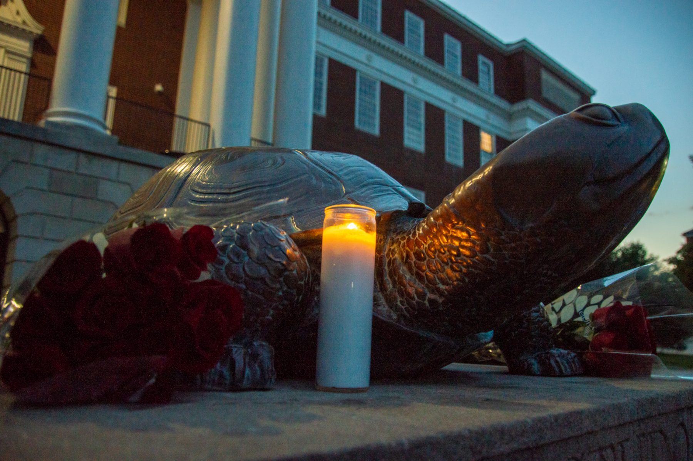
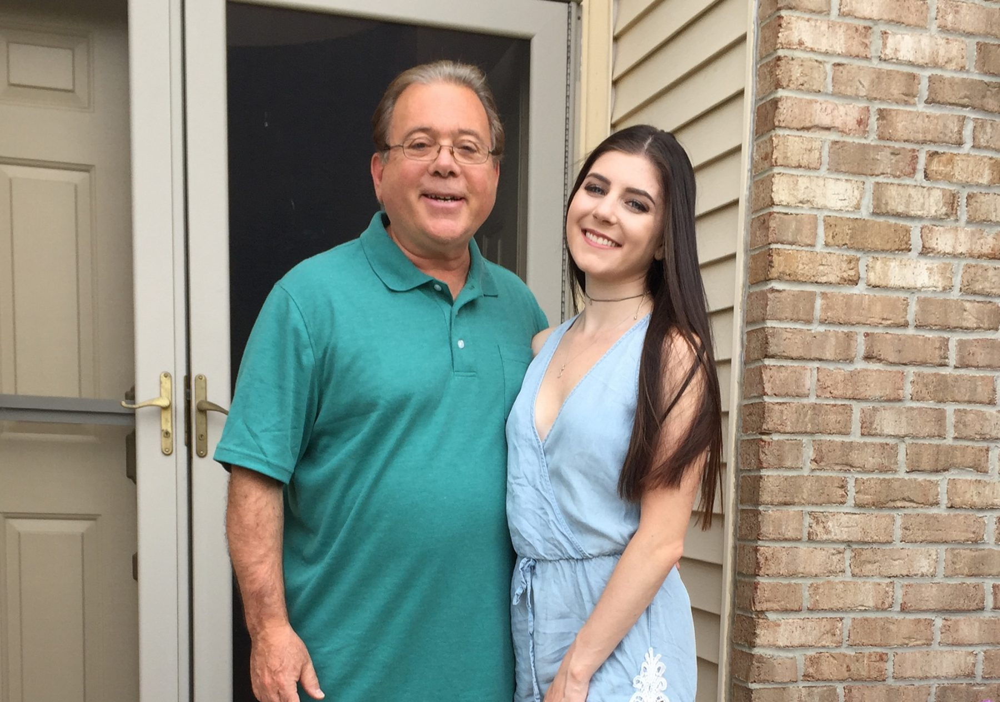
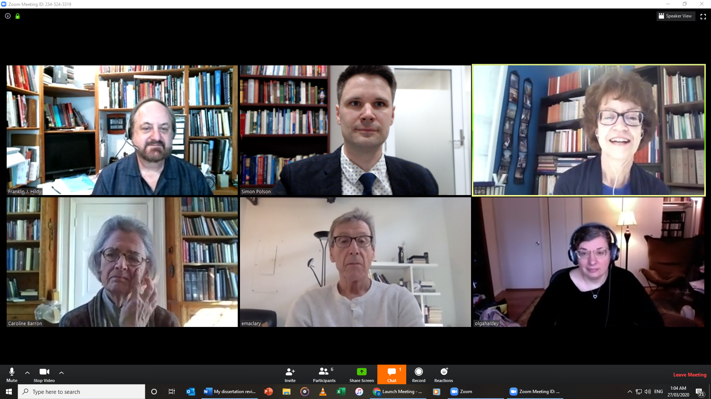
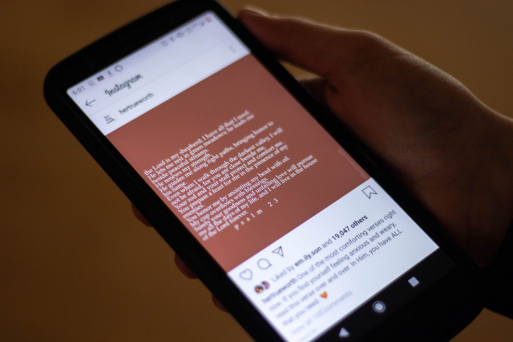
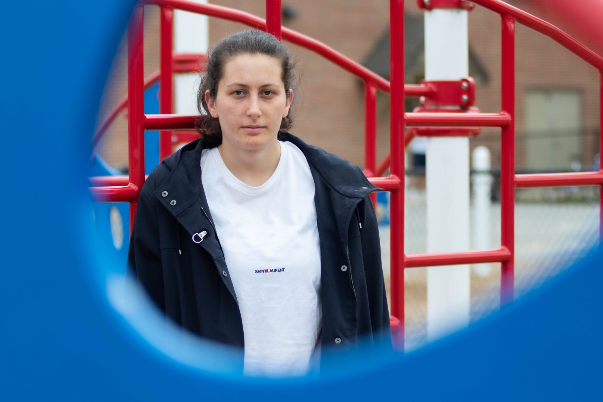

The Diamondback is an independent student newspaper at the University of Maryland. I joined the newspaper in Nov. of 2019 on the science and technology beat. As of May of 2020, I cover graduate student life and government.
As a reporter, I write at least two stories per week, cover breaking news stories and develop relationships with sources. In my first 12 full weeks with The Diamondback, I wrote 33 articles.
Here are some stories that I'm particularly proud of:

Dozens gather at UMD vigil for beloved African American Studies professor Jonathan England

“It feels like a void”: Grief through the eyes of one UMD student in the age of COVID-19

What it’s like to defend a dissertation in the age of COVID-19

“In God’s hands”: How UMD’s religious communities are keeping the faith amid the pandemic

UMD international students feel stranded as COVID-19 devastates their home countries
To read all my stories, check my page on The Diamondback.